General Information on the PPL
0.10.2
The Main Features
The Parma Polyhedra Library (PPL) is a modern C++ library for the manipulation of numerical information that can be represented by points in some -dimensional vector space. For instance, one of the key domains the PPL supports is that of rational convex polyhedra (Section Convex Polyhedra). Such domains are employed in several systems for the analysis and verification of hardware and software components, with applications spanning imperative, functional and logic programming languages, synchronous languages and synchronization protocols, real-time and hybrid systems. Even though the PPL library is not meant to target a particular problem, the design of its interface has been largely influenced by the needs of the above class of applications. That is the reason why the library implements a few operators that are more or less specific to static analysis applications, while lacking some other operators that might be useful when working, e.g., in the field of computational geometry.
-dimensional vector space. For instance, one of the key domains the PPL supports is that of rational convex polyhedra (Section Convex Polyhedra). Such domains are employed in several systems for the analysis and verification of hardware and software components, with applications spanning imperative, functional and logic programming languages, synchronous languages and synchronization protocols, real-time and hybrid systems. Even though the PPL library is not meant to target a particular problem, the design of its interface has been largely influenced by the needs of the above class of applications. That is the reason why the library implements a few operators that are more or less specific to static analysis applications, while lacking some other operators that might be useful when working, e.g., in the field of computational geometry.The main features of the library are the following:
- it is user friendly: you write
x + 2*y + 5*z <= 7when you mean it; - it is fully dynamic: available virtual memory is the only limitation to the dimension of anything;
- it provides full support for the manipulation of convex polyhedra that are not topologically closed;
- it is written in standard C++: meant to be portable;
- it is exception-safe: never leaks resources or leaves invalid object fragments around;
- it is rather efficient: and we hope to make it even more so;
- it is thoroughly documented: perhaps not literate programming but close enough;
- it has interfaces to other programming languages: including C, Java, OCaml and a number of Prolog systems;
- it is free software: distributed under the terms of the GNU General Public License.
In the following section we describe all the domains available to the PPL user. More detailed descriptions of these domains andthe operations provided will be found in subsequent sections.
In the final section of this chapter (Section Using the Library), we provide some additional advice on the use of the library.
Semantic Geometric Descriptors
A semantic geometric descriptor is a subset of . The PPL provides several classes of semantic GDs. These are identified by their C++ class name, together with the class template parameters, if any. These classes include the simple classes:
. The PPL provides several classes of semantic GDs. These are identified by their C++ class name, together with the class template parameters, if any. These classes include the simple classes:
where:
Tis a numeric type chosen amongmpz_class,mpq_class,signed char,short,int,long,longlong (or any of the C99 exact width integer equivalentsint8_t, int16_t, and so forth); andITVis an instance of theIntervaltemplate class.
Other semantic GDs, the compound classes, can be constructed (also recursively) from all the GDs classes. These include:
where PS, D1 and D2 can be any semantic GD classes and R is the reduction operation to be applied to the component domains of the product class.
A uniform set of operations is provided for creating, testing and maintaining each of the semantic GDs. However, as many of these depend on one or more syntactic GDs, we first describe the syntactic GDs.
Syntactic Geometric Descriptors
A syntactic geometric descriptor is for defining, modifying and inspecting a semantic GD. There are three kinds of syntactic GDs: basic GDs, constraint GDs and generator GDs. Some of these are generic and some specific. A generic syntactic GD can be used (in the appropriate context) with any semantic GD; clearly, different semantic GDs will usually provide different levels of support for the different subclasses of generic GDs. In contrast, the use of a specific GD may be restricted to apply to a given subset of the semantic GDs (i.e., some semantic GDs provide no support at all for them).Basic Geometric Descriptors
The following basic GDs currently supported by the PPL are:- space dimension;
- variable and variable set;
- coefficient;
- linear expression;
- relation symbol;
- vector point.
These classes, which are all generic syntactic GDs, are used to build the constraint and generator GDs as well as support many generic operations on the semantic GDs.
Constraint Geometric Descriptors
The PPL currently supports the following classes of generic constraint GDs:- linear constraint;
- linear congruence.
Each linear constraint can be further classified to belong to one or more of the following syntactic subclasses:
- inconsistent constraints (e.g.,
 );
); - tautological constraints (e.g., 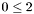);
- interval constraints (e.g., 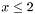);
- bounded-difference constraints (e.g., 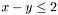);
- octagonal constraints (e.g., 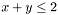);
- linear equality constraints (e.g., 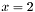);
- non-strict linear inequality constraints (e.g., 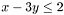);
- strict linear inequality constraints (e.g., 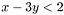).
Note that the subclasses are not disjoint.
Similarly, each linear congruence can be classified to belong to one or more of the following syntactic subclasses:
- inconsistent congruences (e.g., 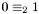);
- tautological congruences (e.g., 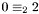);
- linear equality, i.e., non-proper congruences (e.g., 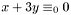);
- proper congruences (e.g.,
 ).
).
The library also supports systems, i.e., finite collections, of either linear constraints or linear congruences (but see the note below).
Each semantic GD provides optimal support for some of the subclasses of generic syntactic GDs listed above: here, the word "optimal" means that the considered semantic GD computes the best upward approximation of the exact meaning of the linear constraint or congruence. When a semantic GD operation is applied to a syntactic GD that is not optimally supported, it will either indicate its unsuitability (e.g., by throwing an exception) or it will apply an upward approximation semantics (possibly not the best one).
For instance, the semantic GD of topologically closed convex polyhedra provides optimal support for non-strict linear inequality and equality constraints, but it does not provide optimal support for strict inequalities. Some of its operations (e.g., add_constraint and add_congruence) will throw an exception if supplied with a non-trivial strict inequality constraint or a proper congruence; some other operations (e.g., refine_with_constraint or refine_with_congruence) will compute an over-approximation.
Similarly, the semantic GD of rational boxes (i.e., multi-dimensional intervals) having integral values as interval boundaries provides optimal support for all interval constraints: even though the interval constraint  cannot be represented exactly, it will be optimally approximated by the constraint 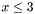.
cannot be represented exactly, it will be optimally approximated by the constraint 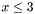.
- Note:
- When providing an upward approximation for a constraint or congruence, we consider it in isolation: in particular, the approximation of each element of a system of GDs is independent from the other elements; also, the approximation is independent from the current value of the semantic GD.
Generator Geometric Descriptors
The PPL currently supports two classes of generator GDs:- polyhedra generator: these are polyhedra points, rays and lines;
- grid generator: these are grid points, parameters and lines.
Rays, lines and parameters are specific of the mentioned semantic GDs and, therefore, they cannot be used by other semantic GDs. In contrast, as already mentioned above, points are basic geometric descriptors since they are also used in generic PPL operations.
Generic Operations on Semantic Geometric Descriptors
- Constructors of a universe or empty semantic GD with the given space dimension.
-
Operations on a semantic GD that do not depend on the syntactic GDs.
-
is_empty(),is_universe(),is_topologically_closed(),is_discrete(),is_bounded(),contains_integer_point()test for the named properties of the semantic GD.
-
total_memory_in_bytes(),external_memory_in_bytes()return the total and external memory size in bytes.
-
OK()checks that the semantic GD has a valid internal representation. (Some GDs provide this method with an optional Boolean argument that, when true, requires to also check for non-emptiness.)
-
space_dimension(),affine_dimension()return, respectively, the space and affine dimensions of the GD.
-
add_space_dimensions_and_embed(),add_space_dimensions_and_project(),expand_space_dimension(),remove_space_dimensions(),fold_space_dimensions(),map_space_dimensions()modify the space dimensions of the semantic GD; where, depending on the operation, the arguments can include the number of space dimensions to be added or removed a variable or set of variables denoting the actual dimensions to be used and a partial function defining a mapping between the dimensions.
-
contains(),strictly_contains(),is_disjoint_from()compare the semantic GD with an argument semantic GD of the same class.
-
topological_closure_assign(),intersection_assign(),upper_bound_assign(),difference_assign(),time_elapse_assign(),widening_assign(),concatenate_assign(),swap()modify the semantic GD, possibly with an argument semantic GD of the same class.
-
constrains(),bounds_from_above(),bounds_from_below(),maximize(),minimize().These find information about the bounds of the semantic GD where the argument variable or linear expression define the direction of the bound.
-
affine_image(),affine_preimage(),generalized_affine_image(),generalized_affine_preimage(),bounded_affine_image(),bounded_affine_preimage().These perform several variations of the affine image and preimage operations where, depending on the operation, the arguments can include a variable representing the space dimension to which the transformation will be applied and linear expressions with possibly a relation symbol and denominator value that define the exact form of the transformation.
-
ascii_load(),ascii_dump()are the ascii input and output operations.
-
- Constructors of a semantic GD of one class from a semantic GD of any other class. These constructors obey an upward approximation semantics, meaning that the constructed semantic GD is guaranteed to contain all the points of the source semantic GD, but possibly more. Some of these constructors provide a complexity parameter with which the application can control the complexity/precision trade-off for the construction operation: by using the complexity parameter, it is possible to keep the construction operation in the polynomial or the simplex worst-case complexity class, possibly incurring into a further upward approximation if the precise constructor is based on an algorithm having exponential complexity.
- Constructors of a semantic GD from a constraint GD; either a linear constraint system or a linear congruence system. These constructors assume that the given semantic GD provides optimal support for the argument syntactic GD: if that is not the case, an invalid argument exception is thrown.
-
Other interaction between the semantic GDs and constraint GDs
-
add_constraint(),add_constraints(),add_recycled_constraints(),add_congruence(),add_congruences(),add_recycled_congruences().These methods assume that the given semantic GD provides optimal support for the argument syntactic GD: if that is not the case, an invalid argument exception is thrown.
For
add_recycled_constraints()andadd_recycled_congruences(), the only assumption that can be made on the constraint GD after return (successful or exceptional) is that it can be safely destroyed. -
refine_with_constraint(),refine_with_constraints(),refine_with_congruence(),refine_with_congruences()If the argument constraint GD is optimally supported by the semantic GD, the the methods behave the same as the corresponding
add_*methods listed above. Otherwise the constraint GD is used only to a limited extent to refine the semantic GD; possibly not at all. Notice that, while repeating an add operation is pointless, this is not true for the refine operations. For example, in those cases whereraises an exception, a fragment of the formSemantic_GD.add_constraint(c)
may give more precise results than a singleSemantic_GD.refine_with_constraint(c) // Other add_constraint(s) or refine_with_constraint(s) operations // on Semantic_GD. Semantic_GD.refine_with_constraint(c)Semantic_GD.refine_with_constraint(c). // Other add_constraint(s) or refine_with_constraint(s) operations // on Semantic_GD. -
constraints(),minimized_constraints(),congruences(),minimized_congruences()returns the indicated system of constraint GDs satisfied by the semantic GD.
-
can_recycle_constraint_systems(),can_recycle_congruence_systems()return true if and only if the semantic GD can recycle the indicated constraint GD.
-
relation_with()This takes a constraint GD as an argument and returns the relations holding between the semantic GD and the constraint GD. The possible relations are:
IS_INCLUDED(),SATURATES(),STRICTLY_INTERSECTS(),IS_DISJOINT()andNOTHING(). This operator also can take a polyhedron generator GD as an argument and returns the relationSUBSUMES()orNOTHING()that holds between the generator GD and the semantic GD.
-
Upward Approximation
The Parma Polyhedra Library, for those cases where an exact result cannot be computed within the specified complexity limits, computes an upward approximation of the exact result. For semantic GDs this means that the computed result is a possibly strict superset of the set of points of that constitutes the exact result. Notice that the PPL does not provide direct support to compute downward approximations (i.e., possibly strict subsets of the exact results). While downward approximations can often be computed from upward ones, the required algorithms and the conditions upon which they are correct are outside the current scope of the PPL. Beware, in particular, of the following possible pitfall: the library provides methods to compute upward approximations of set-theoretic difference, which is antitone in its second argument. Applying a difference method to a second argument that is not an exact representation or a downward approximation of reality, would yield a result that, of course, is not an upward approximation of reality. It is the responsibility of the library user to provide the PPL's method with approximations of reality that are consistent with respect to the desired results.Convex Polyhedra
In this section we introduce convex polyhedra, as considered by the library, in more detail. For more information about the definitions and results stated here see [BRZH02b], [Fuk98], [NW88], and [Wil93].Vectors, Matrices and Scalar Products
We denote by the -dimensional vector space on the field of real numbers
the -dimensional vector space on the field of real numbers  , endowed with the standard topology. The set of all non-negative reals is denoted by 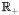. For each
, endowed with the standard topology. The set of all non-negative reals is denoted by 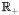. For each  , 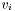 denotes the
, 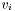 denotes the  -th component of the (column) vector 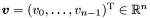. We denote by
-th component of the (column) vector 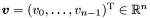. We denote by  the vector of , called the origin, having all components equal to zero. A vector 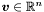 can be also interpreted as a matrix in 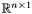 and manipulated accordingly using the usual definitions for addition, multiplication (both by a scalar and by another matrix), and transposition, denoted by 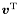.
the vector of , called the origin, having all components equal to zero. A vector 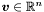 can be also interpreted as a matrix in 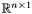 and manipulated accordingly using the usual definitions for addition, multiplication (both by a scalar and by another matrix), and transposition, denoted by 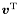.The scalar product of 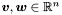, denoted 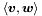, is the real number
![\[ \vect{v}^\transpose \vect{w} = \sum_{i=0}^{n-1} v_i w_i. \]](form_29.png)
For any 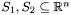, the Minkowski's sum of 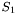 and 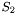 is: 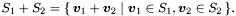
Affine Hyperplanes and Half-spaces
For each vector 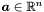 and scalar 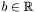, where 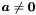, and for each relation symbol , the linear constraint 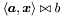 defines:
, the linear constraint 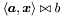 defines:- an affine hyperplane if it is an equality constraint, i.e., if 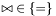;
- a topologically closed affine half-space if it is a non-strict inequality constraint, i.e., if 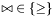;
- a topologically open affine half-space if it is a strict inequality constraint, i.e., if
 .
.
Note that each hyperplane 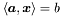 can be defined as the intersection of the two closed affine half-spaces 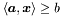 and 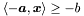. Also note that, when 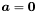, the constraint 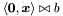 is either a tautology (i.e., always true) or inconsistent (i.e., always false), so that it defines either the whole vector space or the empty set .
Convex Polyhedra
The set 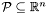 is a not necessarily closed convex polyhedron (NNC polyhedron, for short) if and only if either can be expressed as the intersection of a finite number of (open or closed) affine half-spaces of or
can be expressed as the intersection of a finite number of (open or closed) affine half-spaces of or  and 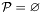. The set of all NNC polyhedra on the vector space is denoted 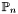.
and 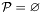. The set of all NNC polyhedra on the vector space is denoted 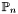.
The set 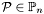 is a closed convex polyhedron (closed polyhedron, for short) if and only if either can be expressed as the intersection of a finite number of closed affine half-spaces of or and . The set of all closed polyhedra on the vector space is denoted 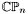.
When ordering NNC polyhedra by the set inclusion relation, the empty set and the vector space are, respectively, the smallest and the biggest elements of both and . The vector space is also called the universe polyhedron.
In theoretical terms, is a lattice under set inclusion and is a sub-lattice of .
- Note:
- In the following, we will usually specify operators on the domain of NNC polyhedra. Unless an explicit distinction is made, these operators are provided with the same specification when applied to the domain of topologically closed polyhedra. The implementation maintains a clearer separation between the two domains of polyhedra (see Topologies and Topological-compatibility): while computing polyhedra in may provide more precise results, polyhedra in can be represented and manipulated more efficiently. As a rule of thumb, if your application will only manipulate polyhedra that are topologically closed, then it should use the simpler domain . Using NNC polyhedra is only recommended if you are going to actually benefit from the increased accuracy.
Bounded Polyhedra
An NNC polyhedron is bounded if there exists a 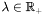 such that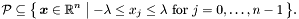
A bounded polyhedron is also called a polytope.
Representations of Convex Polyhedra
NNC polyhedra can be specified by using two possible representations, the constraints (or implicit) representation and the generators (or parametric) representation.Constraints Representation
In the sequel, we will simply write ``equality'' and ``inequality'' to mean ``linear equality'' and ``linear inequality'', respectively; also, we will refer to either an equality or an inequality as a constraint.By definition, each polyhedron is the set of solutions to a constraint system, i.e., a finite number of constraints. By using matrix notation, we have
![\[ \cP \defeq \{\, \vect{x} \in \Rset^n \mid A_1 \vect{x} = \vect{b}_1, A_2 \vect{x} \geq \vect{b}_2, A_3 \vect{x} > \vect{b}_3 \,\}, \]](form_57.png)
where, for all 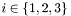,  and 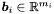, and 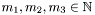 are the number of equalities, the number of non-strict inequalities, and the number of strict inequalities, respectively.
and 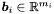, and 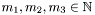 are the number of equalities, the number of non-strict inequalities, and the number of strict inequalities, respectively.
Combinations and Hulls
Let 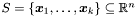 be a finite set of vectors. For all scalars 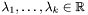, the vector 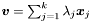 is said to be a linear combination of the vectors in 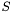. Such a combination is said to be- a positive (or conic) combination, if 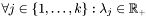;
- an affine combination, if 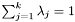;
- a convex combination, if it is both positive and affine.
We denote by (resp., , , ) the set of all the linear (resp., positive, affine, convex) combinations of the vectors in .
Let , where . We denote by the set of all convex combinations of the vectors in such that  for some (informally, we say that there exists a vector of
for some (informally, we say that there exists a vector of  that plays an active role in the convex combination). Note that so that, if
that plays an active role in the convex combination). Note that so that, if  ,
,
It can be observed that is an affine space, is a topologically closed convex cone, is a topologically closed polytope, and is an NNC polytope.
Points, Closure Points, Rays and Lines
Let be an NNC polyhedron. Then- a vector is called a point of ;
- a vector is called a closure point of if it is a point of the topological closure of ;
- a vector , where , is called a ray (or direction of infinity) of if and , for all points and all ;
- a vector is called a line of if both
 and are rays of .
and are rays of .
A point of an NNC polyhedron is a vertex if and only if it cannot be expressed as a convex combination of any other pair of distinct points in . A ray of a polyhedron is an extreme ray if and only if it cannot be expressed as a positive combination of any other pair and of rays of , where , and for all (i.e., rays differing by a positive scalar factor are considered to be the same ray).
Generators Representation
Each NNC polyhedron can be represented by finite sets of lines , rays
, rays  , points and closure points of . The 4-tuple
, points and closure points of . The 4-tuple  is said to be a generator system for , in the sense that
is said to be a generator system for , in the sense that
where the symbol '' denotes the Minkowski's sum.
When is a closed polyhedron, then it can be represented by finite sets of lines , rays and points of . In this case, the 3-tuple  is said to be a generator system for since we have
is said to be a generator system for since we have
Thus, in this case, every closure point of is a point of .
For any and generator system for , we have if and only if . Also must contain all the vertices of although can be non-empty and have no vertices. In this case, as is necessarily non-empty, it must contain points of that are not vertices. For instance, the half-space of  corresponding to the single constraint can be represented by the generator system such that , , , and . It is also worth noting that the only ray in is not an extreme ray of .
corresponding to the single constraint can be represented by the generator system such that , , , and . It is also worth noting that the only ray in is not an extreme ray of .
Minimized Representations
A constraints system for an NNC polyhedron is said to be minimized if no proper subset of is a constraint system for.
Similarly, a generator system for an NNC polyhedron is said to be minimized if there does not exist a generator system for such that , , and .
Double Description
Any NNC polyhedron can be described by using a constraint system , a generator system , or both by means of the double description pair (DD pair) . The double description method is a collection of well-known as well as novel theoretical results showing that, given one kind of representation, there are algorithms for computing a representation of the other kind and for minimizing both representations by removing redundant constraints/generators.Such changes of representation form a key step in the implementation of many operators on NNC polyhedra: this is because some operators, such as intersections and poly-hulls, are provided with a natural and efficient implementation when using one of the representations in a DD pair, while being rather cumbersome when using the other.
Topologies and Topological-compatibility
As indicated above, when an NNC polyhedron is necessarily closed, we can ignore the closure points contained in its generator system (as every closure point is also a point) and represent by the triple . Similarly, can be represented by a constraint system that has no strict inequalities. Thus a necessarily closed polyhedron can have a smaller representation than one that is not necessarily closed. Moreover, operators restricted to work on closed polyhedra only can be implemented more efficiently. For this reason the library provides two alternative ``topological kinds'' for a polyhedron, NNC and C. We shall abuse terminology by referring to the topological kind of a polyhedron as its topology.In the library, the topology of each polyhedron object is fixed once for all at the time of its creation and must be respected when performing operations on the polyhedron.
Unless it is otherwise stated, all the polyhedra, constraints and/or generators in any library operation must obey the following topological-compatibility rules:
- polyhedra are topologically-compatible if and only if they have the same topology;
- all constraints except for strict inequality constraints and all generators except for closure points are topologically-compatible with both C and NNC polyhedra;
- strict inequality constraints and closure points are topologically-compatible with a polyhedron if and only if it is NNC.
Wherever possible, the library provides methods that, starting from a polyhedron of a given topology, build the corresponding polyhedron having the other topology.
Space Dimensions and Dimension Compatibility
The space dimension of an NNC polyhedron (resp., a C polyhedron ) is the dimension of the corresponding vector space . The space dimension of constraints, generators and other objects of the library is defined similarly.
of the corresponding vector space . The space dimension of constraints, generators and other objects of the library is defined similarly.Unless it is otherwise stated, all the polyhedra, constraints and/or generators in any library operation must obey the following (space) dimension-compatibility rules:
- polyhedra are dimension-compatible if and only if they have the same space dimension;
- the constraint where and , is dimension-compatible with a polyhedron having space dimension if and only if ;
- the generator is dimension-compatible with a polyhedron having space dimension if and only if ;
- a system of constraints (resp., generators) is dimension-compatible with a polyhedron if and only if all the constraints (resp., generators) in the system are dimension-compatible with the polyhedron.
While the space dimension of a constraint, a generator or a system thereof is automatically adjusted when needed, the space dimension of a polyhedron can only be changed by explicit calls to operators provided for that purpose.
Affine Independence and Affine Dimension
A finite set of points is affinely independent if, for all , the system of equations
implies that, for each , .
The maximum number of affinely independent points in is  .
.
A non-empty NNC polyhedron has affine dimension , denoted by , if the maximum number of affinely independent points in is .
We remark that the above definition only applies to polyhedra that are not empty, so that . By convention, the affine dimension of an empty polyhedron is 0 (even though the ``natural'' generalization of the definition above would imply that the affine dimension of an empty polyhedron is  ).
).
- Note:
- The affine dimension
 of an NNC polyhedron must not be confused with the space dimension of , which is the dimension of the enclosing vector space . In particular, we can have even though and
of an NNC polyhedron must not be confused with the space dimension of , which is the dimension of the enclosing vector space . In particular, we can have even though and  are dimension-compatible; and vice versa, and may be dimension-incompatible polyhedra even though .
are dimension-compatible; and vice versa, and may be dimension-incompatible polyhedra even though .
Rational Polyhedra
An NNC polyhedron is called rational if it can be represented by a constraint system where all the constraints have rational coefficients. It has been shown that an NNC polyhedron is rational if and only if it can be represented by a generator system where all the generators have rational coefficients.The library only supports rational polyhedra. The restriction to rational numbers applies not only to polyhedra, but also to the other numeric arguments that may be required by the operators considered, such as the coefficients defining (rational) affine transformations.
Operations on Convex Polyhedra
In this section we briefly describe operations on NNC polyhedra that are provided by the library.Intersection and Convex Polyhedral Hull
For any pair of NNC polyhedra , the intersection of and , defined as the set intersection , is the biggest NNC polyhedron included in both and ; similarly, the convex polyhedral hull (or poly-hull) of and , denoted by , is the smallest NNC polyhedron that includes both and . The intersection and poly-hull of any pair of closed polyhedra in is also closed.
, is the smallest NNC polyhedron that includes both and . The intersection and poly-hull of any pair of closed polyhedra in is also closed.In theoretical terms, the intersection and poly-hull operators defined above are the binary meet and the binary join operators on the lattices and .
Convex Polyhedral Difference
For any pair of NNC polyhedra , the convex polyhedral difference (or poly-difference) of and is defined as the smallest convex polyhedron containing the set-theoretic difference of and .In general, even though are topologically closed polyhedra, their poly-difference may be a convex polyhedron that is not topologically closed. For this reason, when computing the poly-difference of two C polyhedra, the library will enforce the topological closure of the result.
Concatenating Polyhedra
Viewing a polyhedron as a set of tuples (its points), it is sometimes useful to consider the set of tuples obtained by concatenating an ordered pair of polyhedra. Formally, the concatenation of the polyhedra and (taken in this order) is the polyhedron such that
Another way of seeing it is as follows: first embed polyhedron into a vector space of dimension and then add a suitably renamed-apart version of the constraints defining .
Adding New Dimensions to the Vector Space
The library provides two operators for adding a number of space dimensions to an NNC polyhedron , therefore transforming it into a new NNC polyhedron . In both cases, the added dimensions of the vector space are those having the highest indices.
The operator add_space_dimensions_and_embed embeds the polyhedron into the new vector space of dimension and returns the polyhedron defined by all and only the constraints defining (the variables corresponding to the added dimensions are unconstrained). For instance, when starting from a polyhedron  and adding a third space dimension, the result will be the polyhedron
and adding a third space dimension, the result will be the polyhedron
In contrast, the operator add_space_dimensions_and_project projects the polyhedron into the new vector space of dimension and returns the polyhedron whose constraint system, besides the constraints defining , will include additional constraints on the added dimensions. Namely, the corresponding variables are all constrained to be equal to 0. For instance, when starting from a polyhedron and adding a third space dimension, the result will be the polyhedron
Removing Dimensions from the Vector Space
The library provides two operators for removing space dimensions from an NNC polyhedron , therefore transforming it into a new NNC polyhedron where .
Given a set of variables, the operator remove_space_dimensions removes all the space dimensions specified by the variables in the set. For instance, letting  be the singleton set
be the singleton set  , then after invoking this operator with the set of variables the resulting polyhedron is
, then after invoking this operator with the set of variables the resulting polyhedron is
Given a space dimension  less than or equal to that of the polyhedron, the operator
less than or equal to that of the polyhedron, the operator remove_higher_space_dimensions removes the space dimensions having indices greater than or equal to . For instance, letting defined as before, by invoking this operator with the resulting polyhedron will be
Mapping the Dimensions of the Vector Space
The operatormap_space_dimensions provided by the library maps the dimensions of the vector space according to a partial injective function such that with . Dimensions corresponding to indices that are not mapped by are removed.
If  , i.e., if the function is undefined everywhere, then the operator projects the argument polyhedron onto the zero-dimension space
, i.e., if the function is undefined everywhere, then the operator projects the argument polyhedron onto the zero-dimension space  ; otherwise the result is given by
; otherwise the result is given by
Expanding One Dimension of the Vector Space to Multiple Dimensions
The operatorexpand_space_dimension provided by the library adds new space dimensions to a polyhedron , with  , so that dimensions ,
, so that dimensions ,  , ,
, ,  of the result are exact copies of the -th space dimension of . More formally,
of the result are exact copies of the -th space dimension of . More formally,
This operation has been proposed in [GDDetal04].
Folding Multiple Dimensions of the Vector Space into One Dimension
The operatorfold_space_dimensions provided by the library, given a polyhedron , with , folds a set of space dimensions , with and for each  , into space dimension , where . The result is given by
, into space dimension , where . The result is given by
where
and, for ,  , ,
, ,
and, finally, for , , ,
![\[ k' \defeq k - \card \{\, j \in J \mid k > j \,\}, \]](form_186.png)
( denotes the cardinality of the finite set ).
This operation has been proposed in [GDDetal04].
Images and Preimages of Affine Transfer Relations
For each relation , we denote by the image under
, we denote by the image under  of the set ; formally,
of the set ; formally,
Similarly, we denote by the preimage under of , that is
If , then the relation is said to be space dimension preserving.
The relation is said to be an affine relation if there exists such that
where , , and  , for each .
, for each .
As a special case, the relation is an affine function if and only if there exist a matrix and a vector such that,
The set of NNC polyhedra is closed under the application of images and preimages of any space dimension preserving affine relation. The same property holds for the set of closed polyhedra, provided the affine relation makes no use of the strict relation symbols  and
and  . Images and preimages of affine relations can be used to model several kinds of transition relations, including deterministic assignments of affine expressions, (affinely constrained) nondeterministic assignments and affine conditional guards.
. Images and preimages of affine relations can be used to model several kinds of transition relations, including deterministic assignments of affine expressions, (affinely constrained) nondeterministic assignments and affine conditional guards.
A space dimension preserving relation can be specified by means of a shorthand notation:
- the vector of unprimed variables is used to represent the space dimensions of the domain of ;
- the vector of primed variables is used to represent the space dimensions of the range of ;
- any primed variable that ``does not occur'' in the shorthand specification is meant to be unaffected by the relation; namely, for each index , if in the syntactic specification of the relation the primed variable only occurs (if ever) with coefficient 0, then it is assumed that the specification also contains the constraint .
As an example, assuming  , the notation , where the primed variable does not occur, is meant to specify the affine relation defined by
, the notation , where the primed variable does not occur, is meant to specify the affine relation defined by
The same relation is specified by , since occurs with coefficient 0.
The library allows for the computation of images and preimages of polyhedra under restricted subclasses of space dimension preserving affine relations, as described in the following.
Single-Update Affine Functions.
Given a primed variable and an unprimed affine expression , the affine function is defined by
and an unprimed affine expression , the affine function is defined by
where
![\[ A = \begin{pmatrix} 1 & & 0 & 0 & \cdots & \cdots & 0 \\ & \ddots & & \vdots & & & \vdots \\ 0 & & 1 & 0 & \cdots & \cdots & 0 \\ a_0 & \cdots & a_{k-1} & a_k & a_{k+1} & \cdots & a_{n-1} \\ 0 & \cdots & \cdots & 0 & 1 & & 0 \\ \vdots & & & \vdots & & \ddots & \\ 0 & \cdots & \cdots & 0 & 0 & & 1 \end{pmatrix}, \qquad \vect{b} = \begin{pmatrix} 0 \\ \vdots \\ 0 \\ b \\ 0 \\ \vdots \\ 0 \end{pmatrix} \]](form_223.png)
and the  (resp.,
(resp.,  ) occur in the st row in
) occur in the st row in  (resp., position in ). Thus function maps any vector to
(resp., position in ). Thus function maps any vector to
The affine image operator computes the affine image of a polyhedron under . For instance, suppose the polyhedron to be transformed is the square in generated by the set of points . Then, if the primed variable is and the affine expression is (so that  , ), the affine image operator will translate to the parallelogram generated by the set of points with height equal to the side of the square and oblique sides parallel to the line . If the primed variable is as before (i.e., ) but the affine expression is
, ), the affine image operator will translate to the parallelogram generated by the set of points with height equal to the side of the square and oblique sides parallel to the line . If the primed variable is as before (i.e., ) but the affine expression is  (so that ), then the resulting polyhedron is the positive diagonal of the square.
(so that ), then the resulting polyhedron is the positive diagonal of the square.
The affine preimage operator computes the affine preimage of a polyhedron under . For instance, suppose now that we apply the affine preimage operator as given in the first example using primed variable and affine expression to the parallelogram ; then we get the original square back. If, on the other hand, we apply the affine preimage operator as given in the second example using primed variable and affine expression to , then the resulting polyhedron is the stripe obtained by adding the line to polyhedron .
Observe that provided the coefficient of the considered variable in the affine expression is non-zero, the affine function is invertible.
Single-Update Bounded Affine Relations.
Given a primed variable and two unprimed affine expressions and , the bounded affine relation is defined as
Generalized Affine Relations.
Similarly, the generalized affine relation , where and are affine expressions and is a relation symbol, is defined as
is a relation symbol, is defined as
When and , then the above affine relation becomes equivalent to the single-update affine function (hence the name given to this operator). It is worth stressing that the notation is not symmetric, because the variables occurring in expression are interpreted as primed variables, whereas those occurring in are unprimed; for instance, the transfer relations and are not equivalent in general.
Cylindrification Operator
The operatorunconstrain computes the cylindrification [HMT71] of a polyhedron with respect to one of its variables. Formally, the cylindrification  of an NNC polyhedron with respect to variable index
of an NNC polyhedron with respect to variable index  is defined as follows:
is defined as follows:
Cylindrification is an idempotent operation; in particular, note that the computed result has the same space dimension of the original polyhedron. A variant of the operator above allows for the cylindrification of a polyhedron with respect to a finite set of variables.
Time-Elapse Operator
The time-elapse operator has been defined in [HPR97]. Actually, the time-elapse operator provided by the library is a slight generalization of that one, since it also works on NNC polyhedra. For any two NNC polyhedra , the time-elapse between and , denoted , is the smallest NNC polyhedron containing the set
Note that, if  are closed polyhedra, the above set is also a closed polyhedron. In contrast, when is not topologically closed, the above set might not be an NNC polyhedron.
are closed polyhedra, the above set is also a closed polyhedron. In contrast, when is not topologically closed, the above set might not be an NNC polyhedron.
Meet-Preserving Enlargement and Simplification
Let be NNC polyhedra. Then:
- is meet-preserving with respect to using context if ;
- is an enlargement of if
 .
.
- is a simplification with respect to if , where
 and
and  are the cardinalities of minimized constraint representations for and , respectively.
are the cardinalities of minimized constraint representations for and , respectively.
Notice that an enlargement need not be a simplification, and vice versa; moreover, the identity function is (trivially) a meet-preserving enlargement and simplification.
The library provides a binary operator (simplify_using_context) for the domain of NNC polyhedra that returns a polyhedron which is a meet-preserving enlargement simplification of its first argument using the second argument as context.
The concept of meet-preserving enlargement and simplification also applies to the other basic domains (boxes, grids, BD and octagonal shapes). See below for a definition of the concept of meet-preserving simplification for powerset domains.
Relation-With Operators
The library provides operators for checking the relation holding between an NNC polyhedron and either a constraint or a generator.
Suppose is an NNC polyhedron and an arbitrary constraint system representing . Suppose also that is a constraint with and the set of points that satisfy  . The possible relations between and are as follows.
. The possible relations between and are as follows.
- is disjoint from if ; that is, adding to gives us the empty polyhedron.
- strictly intersects if
 and ; that is, adding to gives us a non-empty polyhedron strictly smaller than .
and ; that is, adding to gives us a non-empty polyhedron strictly smaller than . - is included in if ; that is, adding to leaves unchanged.
- saturates if , where is the hyperplane induced by constraint , i.e., the set of points satisfying the equality constraint ; that is, adding the constraint to leaves unchanged.
The polyhedron subsumes the generator if adding to any generator system representing does not change .
Widening Operators
The library provides two widening operators for the domain of polyhedra. The first one, that we call H79-widening, mainly follows the specification provided in the PhD thesis of N. Halbwachs [Hal79], also described in [HPR97]. Note that in the computation of the H79-widening of two polyhedra it is required as a precondition that (the same assumption was implicitly present in the cited papers).The second widening operator, that we call BHRZ03-widening, is an instance of the specification provided in [BHRZ03a]. This operator also requires as a precondition that and it is guaranteed to provide a result which is at least as precise as the H79-widening.
Both widening operators can be applied to NNC polyhedra. The user is warned that, in such a case, the results may not closely match the geometric intuition which is at the base of the specification of the two widenings. The reason is that, in the current implementation, the widenings are not directly applied to the NNC polyhedra, but rather to their internal representations. Implementation work is in progress and future versions of the library may provide an even better integration of the two widenings with the domain of NNC polyhedra.
- Note:
- As is the case for the other operators on polyhedra, the implementation overwrites one of the two polyhedra arguments with the result of the widening application. To avoid trivial misunderstandings, it is worth stressing that if polyhedra and (where ) are identified by program variables
pandq, respectively, then the callq.H79_widening_assign(p)will assign the polyhedron to variableq. Namely, it is the bigger polyhedron which is overwritten by the result of the widening. The smaller polyhedron is not modified, so as to lead to an easier coding of the usual convergence test ( can be coded as p.contains(q)). Note that, in the above context, a call such asp.H79_widening_assign(q)is likely to result in undefined behavior, since the precondition will be missed (unless it happens that ). The same observation holds for all flavors of widenings and extrapolation operators that are implemented in the library and for all the language interfaces.
Widening with Tokens
When approximating a fixpoint computation using widening operators, a common tactic to improve the precision of the final result is to delay the application of widening operators. The usual approach is to fix a parameter and only apply widenings starting from the -th iteration.
and only apply widenings starting from the -th iteration.
The library also supports an improved widening delay strategy, that we call widening with tokens [BHRZ03a]. A token is a sort of wild card allowing for the replacement of the widening application by the exact upper bound computation: the token is used (and thus consumed) only when the widening would have resulted in an actual precision loss (as opposed to the potential precision loss of the classical delay strategy). Thus, all widening operators can be supplied with an optional argument, recording the number of available tokens, which is decremented when tokens are used. The approximated fixpoint computation will start with a fixed number of tokens, which will be used if and when needed. When there are no tokens left, the widening is always applied.
Extrapolation Operators
Besides the two widening operators, the library also implements several extrapolation operators, which differ from widenings in that their use along an upper iteration sequence does not ensure convergence in a finite number of steps.In particular, for each of the two widenings there is a corresponding limited extrapolation operator, which can be used to implement the widening ``up to'' technique as described in [HPR97]. Each limited extrapolation operator takes a constraint system as an additional parameter and uses it to improve the approximation yielded by the corresponding widening operator. Note that a convergence guarantee can only be obtained by suitably restricting the set of constraints that can occur in this additional parameter. For instance, in [HPR97] this set is fixed once and for all before starting the computation of the upward iteration sequence.
The bounded extrapolation operators further enhance each one of the limited extrapolation operators described above by intersecting the result of the limited extrapolation operation with the box obtained as a result of applying the CC76-widening to the smallest boxes enclosing the two argument polyhedra.
Intervals and Boxes
The PPL provides support for computations on non-relational domains, called boxes, and also the interval domains used for their representation.
An interval in is a pair of bounds, called lower and upper. Each bound can be either (1) closed and bounded, (2) open and bounded, or (3) open and unbounded. If the bound is bounded, then it has a value in . For each vector and scalar , and for each relation symbol  , the constraint is said to be a interval constraint if there exist an index such that, for all , . Thus each interval constraint that is not a tautology or inconsistent has the form , , , or
, the constraint is said to be a interval constraint if there exist an index such that, for all , . Thus each interval constraint that is not a tautology or inconsistent has the form , , , or  , with .
, with .
Letting be a sequence of intervals and be the vector in with 1 in the 'th position and zeroes in every other position; if the lower bound of the 'th interval in is bounded, the corresponding interval constraint is defined as  , where is the value of the bound and
, where is the value of the bound and  is if it is a closed bound and
is if it is a closed bound and  if it is an open bound. Similarly, if the upper bound of the 'th interval in is bounded, the corresponding interval constraint is defined as , where is the value of the bound and is if it is a closed bound and if it is an open bound.
if it is an open bound. Similarly, if the upper bound of the 'th interval in is bounded, the corresponding interval constraint is defined as , where is the value of the bound and is if it is a closed bound and if it is an open bound.
A convex polyhedron is said to be a box if and only if either is the set of solutions to a finite set of interval constraints or and . Therefore any -dimensional box in where can be represented by a sequence of intervals in and is a closed polyhedron if every bound in the intervals in is either closed and bounded or open and unbounded.
Widening and Extrapolation Operators on Boxes
The library provides a widening operator for boxes. Given two sequences of intervals defining two-dimensional boxes, the CC76-widening applies, for each corresponding interval and bound, the interval constraint widening defined in [CC76]. For extra precision, this incorporates the widening with thresholds as defined in [BCCetal02] with as the set of default threshold values.Weakly-Relational Shapes
The PPL provides support for computations on numerical domains that, in selected contexts, can achieve a better precision/efficiency ratio with respect to the corresponding computations on a ``fully relational'' domain of convex polyhedra. This is achieved by restricting the syntactic form of the constraints that can be used to describe the domain elements.Bounded Difference Shapes
For each vector and scalar , and for each relation symbol , the linear constraint is said to be a bounded difference if there exist two indices such that:
, the linear constraint is said to be a bounded difference if there exist two indices such that:- and ;
- , for all .
A convex polyhedron is said to be a bounded difference shape (BDS, for short) if and only if either can be expressed as the intersection of a finite number of bounded difference constraints or and .
Octagonal Shapes
For each vector and scalar , and for each relation symbol, the linear constraint is said to be an octagonal if there exist two indices such that:- ;
- , for all .
A convex polyhedron is said to be an octagonal shape (OS, for short) if and only if either can be expressed as the intersection of a finite number of octagonal constraints or and .
Note that, since any bounded difference is also an octagonal constraint, any BDS is also an OS. The name ``octagonal'' comes from the fact that, in a vector space of dimension 2, a bounded OS can have eight sides at most.
Weakly-Relational Shapes Interface
By construction, any BDS or OS is always topologically closed. Under the usual set inclusion ordering, the set of all BDSs (resp., OSs) on the vector space is a lattice having the empty set and the universe as the smallest and the biggest elements, respectively. In theoretical terms, it is a meet sub-lattice of ; moreover, the lattice of BDSs is a meet sublattice of the lattice of OSs. The least upper bound of a finite set of BDSs (resp., OSs) is said to be their bds-hull (resp., oct-hull).As far as the representation of the rational inhomogeneous term of each bounded difference or octagonal constraint is concerned, several rounding-aware implementation choices are available, including:
- bounded precision integer types;
- bounded precision floating point types;
- unbounded precision integer and rational types, as provided by GMP.
The user interface for BDSs and OSs is meant to be as similar as possible to the one developed for the domain of closed polyhedra: in particular, all operators on polyhedra are also available for the domains of BDSs and OSs, even though they are typically characterized by a lower degree of precision. For instance, the bds-difference and oct-difference operators return (the smallest) over-approximations of the set-theoretical difference operator on the corresponding domains. In the case of (generalized) images and preimages of affine relations, suitable (possibly not-optimal) over-approximations are computed when the considered relations cannot be precisely modeled by only using bounded differences or octagonal constraints.
Widening and Extrapolation Operators on Weakly-Relational Shapes
For the domains of BDSs and OSs, the library provides a variant of the widening operator for convex polyhedra defined in [CH78]. The implementation follows the specification in [BHMZ05a,BHMZ05b], resulting in an operator which is well-defined on the corresponding domain (i.e., it does not depend on the internal representation of BDSs or OSs), while still ensuring convergence in a finite number of steps.The library also implements an extension of the widening operator for intervals as defined in [CC76]. The reader is warned that such an extension, even though being well-defined on the domain of BDSs and OSs, is not provided with a convergence guarantee and is therefore an extrapolation operator.
Rational Grids
In this section we introduce rational grids as provided by the library. See also [BDHetal05] for a detailed description of this domain.The library supports two representations for the grids domain; congruence systems and grid generator systems. We first describe linear congruence relations which form the elements of a congruence system.
Congruences and Congruence Relations
For any , denotes the congruence .
.Let . For each vector and scalars , the notation stands for the linear congruence relation in defined by the set of vectors
when , the relation is said to be proper; (i.e., when ) denotes the equality .  is called the frequency or modulus and the base value of the relation. Thus, provided , the relation defines the set of affine hyperplanes
is called the frequency or modulus and the base value of the relation. Thus, provided , the relation defines the set of affine hyperplanes
if , defines the universe and the empty set, otherwise.
Rational Grids
The set is a rational grid if and only if either is the set of vectors in that satisfy a finite system of congruence relations in or and .We also say that is described by and that is a congruence system for .
The grid domain  is the set of all rational grids described by finite sets of congruence relations in .
is the set of all rational grids described by finite sets of congruence relations in .
If the congruence system describes the , the empty grid, then we say that is inconsistent. For example, the congruence systems meaning that  and , for any , meaning that the value of an expression must be both even and odd are both inconsistent since both describe the empty grid.
and , for any , meaning that the value of an expression must be both even and odd are both inconsistent since both describe the empty grid.
When ordering grids by the set inclusion relation, the empty set and the vector space (which is described by the empty set of congruence relations) are, respectively, the smallest and the biggest elements of . The vector space is also called the universe grid.
In set theoretical terms, is a lattice under set inclusion.
Integer Combinations
Let be a finite set of vectors. For all scalars , the vector is said to be a integer combination of the vectors in .We denote by (resp., ) the set of all the integer (resp., integer and affine) combinations of the vectors in .
Points, Parameters and Lines
Let be a grid. Then- a vector
 is called a grid point of ;
is called a grid point of ; - a vector , where , is called a parameter of if and , for all points and all ;
- a vector is called a grid line of if and , for all points and all .
The Grid Generator Representation
We can generate any rational grid in from a finite subset of its points, parameters and lines; each point in a grid is obtained by adding a linear combination of its generating lines to an integral combination of its parameters and an integral affine combination of its generating points.If are each finite subsets of and
where the symbol '' denotes the Minkowski's sum, then is a rational grid (see Section 4.4 in [Sch99] and also Proposition 8 in [BDHetal05]). The 3-tuple is said to be a grid generator system for and we write .
Note that the grid if and only if the set of grid points . If , then where, for some , .
Minimized Grid Representations
A minimized congruence system for is such that, if is another congruence system for , then . Note that a minimized congruence system for a non-empty grid has at most congruence relations.
Similarly, a minimized grid generator system for is such that, if is another grid generator system for , then and . Note that a minimized grid generator system for a grid has no more than a total of grid lines, parameters and points.
Double Description for Grids
As for convex polyhedra, any grid can be described by using a congruence system for , a grid generator system for , or both by means of the double description pair (DD pair) . The double description method for grids is a collection of theoretical results very similar to those for convex polyhedra showing that, given one kind of representation, there are algorithms for computing a representation of the other kind and for minimizing both representations.As for convex polyhedra, such changes of representation form a key step in the implementation of many operators on grids such as, for example, intersection and grid join.
Space Dimensions and Dimension-compatibility for Grids
The space dimension of a grid is the dimension of the corresponding vector space . The space dimension of congruence relations, grid generators and other objects of the library is defined similarly.Affine Independence and Affine Dimension for Grids
A non-empty grid has affine dimension , denoted by , if the maximum number of affinely independent points in is . The affine dimension of an empty grid is defined to be 0. Thus we have .Operations on Rational Grids
In this section we briefly describe operations on rational grids that are provided by the library. These are similar to those described in Section Operations on Convex Polyhedra.Grid Intersection and Grid Join
For any pair of grids , the intersection of and , defined as the set intersection , is the largest grid included in both and ; similarly, the grid join of and , denoted by , is the smallest grid that includes both and .
, is the largest grid included in both and ; similarly, the grid join of and , denoted by , is the smallest grid that includes both and .In theoretical terms, the intersection and grid join operators defined above are the binary meet and the binary join operators on the lattice .
Grid Difference
For any pair of grids , the grid difference of and is defined as the smallest grid containing the set-theoretic difference of and .Concatenating Grids
Viewing a grid as a set of tuples (its points), it is sometimes useful to consider the set of tuples obtained by concatenating an ordered pair of grids. Formally, the concatenation of the grids and (taken in this order) is the grid in defined as
and (taken in this order) is the grid in defined as
Another way of seeing it is as follows: first embed grid into a vector space of dimension and then add a suitably renamed-apart version of the congruence relations defining .
Adding New Dimensions to the Vector Space
The library provides two operators for adding a number of space dimensions to a grid , therefore transforming it into a new grid in . In both cases, the added dimensions of the vector space are those having the highest indices.
The operator add_space_dimensions_and_embed embeds the grid into the new vector space of dimension and returns the grid defined by all and only the congruences defining (the variables corresponding to the added dimensions are unconstrained). For instance, when starting from a grid  and adding a third space dimension, the result will be the grid
and adding a third space dimension, the result will be the grid
![\[ \bigl\{\, (x_0, x_1, x_2)^\transpose \in \Rset^3 \bigm| (x_0, x_1)^\transpose \in \cL \,\bigr\}. \]](form_377.png)
In contrast, the operator add_space_dimensions_and_project projects the grid into the new vector space of dimension and returns the grid whose congruence system, besides the congruence relations defining , will include additional equalities on the added dimensions. Namely, the corresponding variables are all constrained to be equal to 0. For instance, when starting from a grid and adding a third space dimension, the result will be the grid
Removing Dimensions from the Vector Space
The library provides two operators for removing space dimensions from a grid , therefore transforming it into a new grid in where .
Given a set of variables, the operator remove_space_dimensions removes all the space dimensions specified by the variables in the set.
Given a space dimension less than or equal to that of the grid, the operator remove_higher_space_dimensions removes the space dimensions having indices greater than or equal to .
Mapping the Dimensions of the Vector Space
The operatormap_space_dimensions provided by the library maps the dimensions of the vector space according to a partial injective function such that
with . Dimensions corresponding to indices that are not mapped by are removed.
If , i.e., if the function is undefined everywhere, then the operator projects the argument grid onto the zero-dimension space ; otherwise the result is a grid in given by
Expanding One Dimension of the Vector Space to Multiple Dimensions
The operatorexpand_space_dimension provided by the library adds new space dimensions to a grid , with , so that dimensions , , , of the resulting grid are exact copies of the -th space dimension of . More formally, the result is a grid in given by
Folding Multiple Dimensions of the Vector Space into One Dimension
The operatorfold_space_dimensions provided by the library, given a grid , with , folds a subset of the set of space dimensions into a space dimension , where . Letting , the result is given by the grid join
where
for , , ,
and, for , , ,
![\[ k' \defeq k - \card \{\, j \in J \mid k > j \,\}. \]](form_389.png)
Affine Images and Preimages
As for convex polyhedra (see Single-Update Affine Functions), the library provides affine image and preimage operators for grids: given a variable and linear expression , these determine the affine transformation that transforms any point in a grid to
The affine image operator computes the affine image of a grid under . For instance, suppose the grid to be transformed is the non-relational grid in generated by the set of grid points . Then, if the considered variable is and the linear expression is (so that ,  ), the affine image operator will translate to the grid generated by the set of grid points which is the grid generated by the grid point and parameters ; or, alternatively defined by the congruence system . If the considered variable is as before (i.e., ) but the linear expression is (so that ), then the resulting grid is the grid containing all the points whose coordinates are integral multiples of 3 and lie on line
), the affine image operator will translate to the grid generated by the set of grid points which is the grid generated by the grid point and parameters ; or, alternatively defined by the congruence system . If the considered variable is as before (i.e., ) but the linear expression is (so that ), then the resulting grid is the grid containing all the points whose coordinates are integral multiples of 3 and lie on line  .
.
The affine preimage operator computes the affine preimage of a grid under . For instance, suppose now that we apply the affine preimage operator as given in the first example using variable and linear expression to the grid ; then we get the original grid back. If, on the other hand, we apply the affine preimage operator as given in the second example using variable and linear expression to , then the resulting grid will consist of all the points in where the  coordinate is an integral multiple of 3.
coordinate is an integral multiple of 3.
Observe that provided the coefficient of the considered variable in the linear expression is non-zero, the affine transformation is invertible.
Generalized Affine Images
Similarly to convex polyhedra (see Generalized Affine Relations), the library provides two other grid operators that are generalizations of the single update affine image and preimage operators for grids. The generalized affine image operator , where and are affine expressions and , is defined as
Note that, when and , so that the transfer function is an equality, then the above operator is equivalent to the application of the standard affine image of with respect to the variable and the affine expression .
Time-Elapse Operator
For any two grids , the time-elapse between and , denoted , is the grid
Relation-with Operators
The library provides operators for checking the relation holding between a grid and a congruence, a grid generator, constraint or a (polyhedron) generator.Suppose is a grid and an arbitrary congruence system representing . Suppose also that is a congruence relation with . The possible relations between and are as follows.
- is disjoint from if ; that is, adding to gives us the empty grid.
- strictly intersects if and ; that is, adding to gives us a non-empty grid strictly smaller than .
- is included in if ; that is, adding to leaves unchanged.
- saturates if is included in and , i.e., is an equality congruence.
For the relation between and a constraint, suppose that is a constraint with and the set of points that satisfy . The possible relations between and are as follows.
- is disjoint from if .
- strictly intersects if
 and .
and . - is included in if .
- saturates if is included in and is .
A grid subsumes a grid generator if adding to any grid generator system representing does not change .
A grid subsumes a (polyhedron) point or closure point if adding the corresponding grid point to any grid generator system representing does not change . A grid subsumes a (polyhedron) ray or line if adding the corresponding grid line to any grid generator system representing does not change .
Widening Operators
The library provides grid widening operators for the domain of grids. The congruence widening and generator widening follow the specifications provided in [BDHetal05]. The third widening uses either the congruence or the generator widening, the exact rule governing this choice at the time of the call is left to the implementation. Note that, as for the widenings provided for convex polyhedra, all the operations provided by the library for computing a widening of grids require as a precondition that .
- Note:
- As is the case for the other operators on grids, the implementation overwrites one of the two grid arguments with the result of the widening application. It is worth stressing that, in any widening operation that computes the widening , the resulting grid will be assigned to overwrite the store containing the bigger grid . The smaller grid is not modified. The same observation holds for all flavors of widenings and extrapolation operators that are implemented in the library and for all the language interfaces.
Widening with Tokens
This is as for widening with tokens for convex polyhedra.Extrapolation Operators
Besides the widening operators, the library also implements several extrapolation operators, which differ from widenings in that their use along an upper iteration sequence does not ensure convergence in a finite number of steps.In particular, for each grid widening that is provided, there is a corresponding limited extrapolation operator, which can be used to implement the widening ``up to'' technique as described in [HPR97]. Each limited extrapolation operator takes a congruence system as an additional parameter and uses it to improve the approximation yielded by the corresponding widening operator. Note that, as in the case for convex polyhedra, a convergence guarantee can only be obtained by suitably restricting the set of congruence relations that can occur in this additional parameter.
The Powerset Construction
The PPL provides the finite powerset construction; this takes a pre-existing domain and upgrades it to one that can represent disjunctive information (by using a finite number of disjuncts). The construction follows the approach described in [Bag98], also summarized in [BHZ04] where there is an account of generic widenings for the powerset domain (some of which are supported in the pointset powerset domain instantiation of this construction described in Section The Pointset Powerset Domain).The Powerset Domain
The domain is built from a pre-existing base-level domain which must include an entailment relation `
which must include an entailment relation ` ', meet operation `', a top element `' and bottom element `'.
', meet operation `', a top element `' and bottom element `'.
A set is called non-redundant with respect to `' if and only if and . The set of finite non-redundant subsets of (with respect to `') is denoted by . The function , called Omega-reduction, maps a finite set into its non-redundant counterpart; it is defined, for each , by
where  denotes .
denotes .
As the intended semantics of a powerset domain element is that of disjunction of the semantics of , the finite set is semantically equivalent to the non-redundant set ; and elements of will be called disjuncts. The restriction to the finite subsets reflects the fact that here disjunctions are implemented by explicit collections of disjuncts. As a consequence of this restriction, for any such that , is the (finite) set of the maximal elements of .
The finite powerset domain over a domain is the set of all finite non-redundant sets of and denoted by  . The domain includes an approximation ordering `' defined so that, for any and , if and only if
. The domain includes an approximation ordering `' defined so that, for any and , if and only if
Therefore the top element is and the bottom element is the emptyset.
- Note:
- As far as Omega-reduction is concerned, the library adopts a lazy approach: an element of the powerset domain is represented by a potentially redundant sequence of disjuncts. Redundancies can be eliminated by explicitly invoking the operator
omega_reduce(), e.g., before performing the output of a powerset element. Note that all the documented operators automatically perform Omega-reductions on their arguments, when needed or appropriate.
Operations on the Powerset Construction
In this section we briefly describe the generic operations on Powerset Domains that are provided by the library for any given base-level domain.Meet and Upper Bound
Given the sets and , the meet and upper bound operators provided by the library returns the set and Omega-reduced set union respectively.Adding a Disjunct
Given the powerset element and the base-level element , the add disjunct operator provided by the library returns the powerset element .Collapsing a Powerset Element
If the given powerset element is not empty, then the collapse operator returns the singleton powerset consisting of an upper-bound of all the disjuncts.The Pointset Powerset Domain
The pointset powerset domain provided by the PPL is the finite powerset domain (defined in Section The Powerset Construction) whose base-level domain is one of the classes of semantic geometric descriptors listed in Section Semantic Geometric Descriptors.In addition to the operations described for the generic powerset domain in Section Operations on the Powerset Construction, the PPL provides all the generic operations listed in Generic Operations on Semantic Geometric Descriptors. Here we just describe those operations that are particular to the pointset powerset domain.
Meet-Preserving Simplification
Let , and be Omega-reduced elements of a pointset powerset domain over the same base-level domain. Then:
, and be Omega-reduced elements of a pointset powerset domain over the same base-level domain. Then:
- is powerset meet-preserving with respect to using context if the meet of and is equal to the meet of and ;
- is a powerset simplification with respect to if .
- is a disjunct meet-preserving simplification with respect to if, for each , there exists such that, for each , is a meet-preserving enlargement and simplification of using context .
The library provides a binary operator (simplify_using_context) for the pointset powerset domain that returns a powerset which is a powerset meet-preserving, powerset simplification and disjunct meet-preserving simplification of its first argument using the second argument as context.
Notice that, due to the powerset simplification property, in general a meet-preserving powerset simplification is not an enlargement with respect to the ordering defined on the powerset lattice. Because of this, the operator provided by the library is only well-defined when the base-level domain is not itself a powerset domain.
Geometric Comparisons
Given the pointset powersets over the same base-level domain and with the same space dimension, then we say that geometrically covers if every point (in some disjunct) of is also a point in a disjunct of . If geometrically covers and geometrically covers , then we say that they are geometrically equal.Pairwise Merge
Given the pointset powerset over a base-level semantic GD domain, then the pairwise merge operator takes pairs of distinct elements in whose upper bound (denoted here by ) in (using the PPL operator upper_bound_assign() for ) is the same as their set-theoretical union and replaces them by their union. This replacement is done recursively so that, for each pair  of distinct disjuncts in the result set, we have .
of distinct disjuncts in the result set, we have .Powerset Extrapolation Operators
The library implements a generalization of the extrapolation operator for powerset domains proposed in [BGP99]. The operatorBGP99_extrapolation_assign is made parametric by allowing for the specification of any PPL extrapolation operator for the base-level domain. Note that, even when the extrapolation operator for the base-level domain is known to be a widening on , the BGP99_extrapolation_assign operator cannot guarantee the convergence of the iteration sequence in a finite number of steps (for a counter-example, see [BHZ04]).Certificate-Based Widenings
The PPL library provides support for the specification of proper widening operators on the pointset powerset domain. In particular, this version of the library implements an instance of the certificate-based widening framework proposed in [BHZ03b].
A finite convergence certificate for an extrapolation operator is a formal way of ensuring that such an operator is indeed a widening on the considered domain. Given a widening operator on the base-level domain , together with the corresponding convergence certificate, the BHZ03 framework is able to lift this widening on to a widening on the pointset powerset domain; ensuring convergence in a finite number of iterations.
Being highly parametric, the BHZ03 widening framework can be instantiated in many ways. The current implementation provides the templatic operator BHZ03_widening_assign<Certificate, Widening> which only exploits a fraction of this generality, by allowing the user to specify the base-level widening function and the corresponding certificate. The widening strategy is fixed and uses two extrapolation heuristics: first, the upper bound operator for the base-level domain is tried; second, the BGP99 extrapolation operator is tried, possibly applying pairwise merging. If both heuristics fail to converge according to the convergence certificate, then an attempt is made to apply the base-level widening to the upper bound of the two arguments, possibly improving the result obtained by means of the difference operator for the base-level domain. For more details and a justification of the overall approach, see [BHZ03b] and [BHZ04].
The library provides several convergence certificates. Note that, for the domain of Polyhedra, while Parma_Polyhedra_Library::BHRZ03_Certificate the "BHRZ03_Certificate" is compatible with both the BHRZ03 and the H79 widenings, H79_Certificate is only compatible with the latter. Note that using different certificates will change the results obtained, even when using the same base-level widening operator. It is also worth stressing that it is up to the user to see that the widening operator is actually compatible with a given convergence certificate. If such a requirement is not met, then an extrapolation operator will be obtained.
Using the Library
A Note on the Implementation of the Operators
When adopting the double description method for the representation of convex polyhedra, the implementation of most of the operators may require an explicit conversion from one of the two representations into the other one, leading to algorithms having a worst-case exponential complexity. However, thanks to the adoption of lazy and incremental computation techniques, the library turns out to be rather efficient in many practical cases.
In earlier versions of the library, a number of operators were introduced in two flavors: a lazy version and an eager version, the latter having the operator name ending with _and_minimize. In principle, only the lazy versions should be used. The eager versions were added to help a knowledgeable user obtain better performance in particular cases. Basically, by invoking the eager version of an operator, the user is trading laziness to better exploit the incrementality of the inner library computations. Starting from version 0.5, the lazy and incremental computation techniques have been refined to achieve a better integration: as a consequence, the lazy versions of the operators are now almost always more efficient than the eager versions.
One of the cases when an eager computation might still make sense is when the well-known fail-first principle comes into play. For instance, if you have to compute the intersection of several polyhedra and you strongly suspect that the result will become empty after a few of these intersections, then you may obtain a better performance by calling the eager version of the intersection operator, since the minimization process also enforces an emptiness check. Note anyway that the same effect can be obtained by interleaving the calls of the lazy operator with explicit emptiness checks.
- Warning:
- For the reasons mentioned above, starting from version 0.10 of the library, the usage of the eager versions (i.e., the ones having a name ending with
_and_minimize) of these operators is deprecated; this is in preparation of their complete removal, which will occur starting from version 0.11.
On Pointset_Powerset and Partially_Reduced_Product Domains: A Warning
For future versions of the PPL library all practical instantiations for the disjuncts for a pointset_powerset and component domains for the partially_reduced_product domains will be fully supported. However, for version 0.10, these compound domains should not themselves occur as one of their argument domains. Therefore their use comes with the following warning.
- Warning:
- The
Pointset_Powerset<PS>andPartially_Reduced_Product<D1, D2, R>should only be used with the following instantiations for the disjunct domain templatePSand component domain templatesD1andD2:C_Polyhedron,NNC_Polyhedron,Grid,Octagonal_Shape<T>,BD_Shape<T>,Box<T>.
On Object-Orientation and Polymorphism: A Disclaimer
The PPL library is mainly a collection of so-called ``concrete data types'': while providing the user with a clean and friendly interface, these types are not meant to --- i.e., they should not --- be used polymorphically (since, e.g., most of the destructors are not declaredvirtual). In practice, this restriction means that the library types should not be used as public base classes to be derived from. A user willing to extend the library types, adding new functionalities, often can do so by using containment instead of inheritance; even when there is the need to override a protected method, non-public inheritance should suffice.On Const-Correctness: A Warning about the Use of References and Iterators
Most operators of the library depend on one or more parameters that are declared ``const'', meaning that they will not be changed by the application of the considered operator. Due to the adoption of lazy computation techniques, in many cases such a const-correctness guarantee only holds at the semantic level, whereas it does not necessarily hold at the implementation level. For a typical example, consider the extraction from a polyhedron of its constraint system representation. While this operation is not going to change the polyhedron, it might actually invoke the internal conversion algorithm and modify the generators representation of the polyhedron object, e.g., by reordering the generators and removing those that are detected as redundant. Thus, any previously computed reference to the generators of the polyhedron (be it a direct reference object or an indirect one, such as an iterator) will no longer be valid. For this reason, code fragments such as the following should be avoided, as they may result in undefined behavior:// Find a reference to the first point of the non-empty polyhedron `ph'. const Generator_System& gs = ph.generators(); Generator_System::const_iterator i = gs.begin(); for (Generator_System::const_iterator gs_end = gs.end(); i != gs_end; ++i) if (i->is_point()) break; const Generator& p = *i; // Get the constraints of `ph'. const Constraint_System& cs = ph.constraints(); // Both the const iterator `i' and the reference `p' // are no longer valid at this point. cout << p.divisor() << endl; // Undefined behavior! ++i; // Undefined behavior!
i and the reference p. Anyway, if really needed, it is always possible to take a copy of, instead of a reference to, the parts of interest of the polyhedron; in the case above, one may have taken a copy of the generator system by replacing the second line of code with the following: Generator_System gs = ph.generators();
Bibliography
- [Anc91]
- C. Ancourt. Génération automatique de codes de transfert pour multiprocesseurs à mémoires locales. PhD thesis, Université de Paris VI, Paris, France, March 1991.
- [BA05]
- J. M. Bjorndalen and O. Anshus. Lessons learned in benchmarking - Floating point benchmarks: Can you trust them? In Proceedings of the Norsk informatikkonferanse 2005 (NIK 2005), pages 89-100, Bergen, Norway, 2005. Tapir Akademisk Forlag.
- [Bag97]
- R. Bagnara. Data-Flow Analysis for Constraint Logic-Based Languages. PhD thesis, Dipartimento di Informatica, Università di Pisa, Pisa, Italy, March 1997. Printed as Report TD-1/97.
- [Bag98]
- R. Bagnara. A hierarchy of constraint systems for data-flow analysis of constraint logic-based languages. Science of Computer Programming, 30(1-2):119-155, 1998.
- [BCC+02]
- B. Blanchet, P. Cousot, R. Cousot, J. Feret, L. Mauborgne, A. Miné, D. Monniaux, and X. Rival. Design and implementation of a special-purpose static program analyzer for safety-critical real-time embedded software. In T. AE. Mogensen, D. A. Schmidt, and I. Hal Sudborough, editors, The Essence of Computation, Complexity, Analysis, Transformation. Essays Dedicated to Neil D. Jones [on occasion of his 60th birthday], volume 2566 of Lecture Notes in Computer Science, pages 85-108. Springer-Verlag, Berlin, 2002.
- [BDH+05]
- R. Bagnara, K. Dobson, P. M. Hill, M. Mundell, and E. Zaffanella. A linear domain for analyzing the distribution of numerical values. Report 2005.06, School of Computing, University of Leeds, UK, 2005. Available at http://www.comp.leeds.ac.uk/research/pubs/reports.shtml.
- [BDH+06]
- R. Bagnara, K. Dobson, P. M. Hill, M. Mundell, and E. Zaffanella. A practical tool for analyzing the distribution of numerical values, 2006. Available at http://www.comp.leeds.ac.uk/hill/Papers/papers.html.
- [BDH+07]
- R. Bagnara, K. Dobson, P. M. Hill, M. Mundell, and E. Zaffanella. Grids: A domain for analyzing the distribution of numerical values. In G. Puebla, editor, Logic-based Program Synthesis and Transformation, 16th International Symposium, volume 4407 of Lecture Notes in Computer Science, pages 219-235, Venice, Italy, 2007. Springer-Verlag, Berlin.
- [BFT00]
- A. Bemporad, K. Fukuda, and F. D. Torrisi. Convexity recognition of the union of polyhedra. Report AUT00-13, Automatic Control Laboratory, ETHZ, Zurich, Switzerland, 2000.
- [BFT01]
- A. Bemporad, K. Fukuda, and F. D. Torrisi. Convexity recognition of the union of polyhedra. Computational Geometry: Theory and Applications, 18(3):141-154, 2001.
- [BGP99]
- T. Bultan, R. Gerber, and W. Pugh. Model-checking concurrent systems with unbounded integer variables: Symbolic representations, approximations, and experimental results. ACM Transactions on Programming Languages and Systems, 21(4):747-789, 1999.
- [BHMZ04]
- R. Bagnara, P. M. Hill, E. Mazzi, and E. Zaffanella. Widening operators for weakly-relational numeric abstractions. Report
arXiv:cs.PL/0412043, 2004. Extended abstract. Contribution to the International workshop on “Numerical & Symbolic Abstract Domains” (NSAD'05, Paris, January 21, 2005). Available at http://arxiv.org/ and http://www.cs.unipr.it/ppl/. - [BHMZ05a]
- R. Bagnara, P. M. Hill, E. Mazzi, and E. Zaffanella. Widening operators for weakly-relational numeric abstractions. Quaderno 399, Dipartimento di Matematica, Università di Parma, Italy, 2005. Available at http://www.cs.unipr.it/Publications/.
- [BHMZ05b]
- R. Bagnara, P. M. Hill, E. Mazzi, and E. Zaffanella. Widening operators for weakly-relational numeric abstractions. In C. Hankin and I. Siveroni, editors, Static Analysis: Proceedings of the 12th International Symposium, volume 3672 of Lecture Notes in Computer Science, pages 3-18, London, UK, 2005. Springer-Verlag, Berlin.
- [BHRZ03a]
- R. Bagnara, P. M. Hill, E. Ricci, and E. Zaffanella. Precise widening operators for convex polyhedra. In R. Cousot, editor, Static Analysis: Proceedings of the 10th International Symposium, volume 2694 of Lecture Notes in Computer Science, pages 337-354, San Diego, California, USA, 2003. Springer-Verlag, Berlin.
- [BHRZ03b]
- R. Bagnara, P. M. Hill, E. Ricci, and E. Zaffanella. Precise widening operators for convex polyhedra. Quaderno 312, Dipartimento di Matematica, Università di Parma, Italy, 2003. Available at http://www.cs.unipr.it/Publications/.
- [BHRZ05]
- R. Bagnara, P. M. Hill, E. Ricci, and E. Zaffanella. Precise widening operators for convex polyhedra. Science of Computer Programming, 58(1-2):28-56, 2005.
- [BHZ02a]
- R. Bagnara, P. M. Hill, and E. Zaffanella. A new encoding and implementation of not necessarily closed convex polyhedra. Quaderno 305, Dipartimento di Matematica, Università di Parma, Italy, 2002. Available at http://www.cs.unipr.it/Publications/.
- [BHZ02b]
- R. Bagnara, P. M. Hill, and E. Zaffanella. A new encoding of not necessarily closed convex polyhedra. In M. Carro, C. Vacheret, and K.-K. Lau, editors, Proceedings of the 1st CoLogNet Workshop on Component-based Software Development and Implementation Technology for Computational Logic Systems, pages 147-153, Madrid, Spain, 2002. Published as TR Number CLIP4/02.0, Universidad Politécnica de Madrid, Facultad de Informática.
- [BHZ03a]
- R. Bagnara, P. M. Hill, and E. Zaffanella. A new encoding and implementation of not necessarily closed convex polyhedra. In M. Leuschel, S. Gruner, and S. Lo Presti, editors, Proceedings of the 3rd Workshop on Automated Verification of Critical Systems, pages 161-176, Southampton, UK, 2003. Published as TR Number DSSE-TR-2003-2, University of Southampton.
- [BHZ03b]
- R. Bagnara, P. M. Hill, and E. Zaffanella. Widening operators for powerset domains. In B. Steffen and G. Levi, editors, Verification, Model Checking and Abstract Interpretation: Proceedings of the 5th International Conference (VMCAI 2004), volume 2937 of Lecture Notes in Computer Science, pages 135-148, Venice, Italy, 2003. Springer-Verlag, Berlin.
- [BHZ04]
- R. Bagnara, P. M. Hill, and E. Zaffanella. Widening operators for powerset domains. Quaderno 349, Dipartimento di Matematica, Università di Parma, Italy, 2004. Available at http://www.cs.unipr.it/Publications/.
- [BHZ05]
- R. Bagnara, P. M. Hill, and E. Zaffanella. Not necessarily closed convex polyhedra and the double description method. Formal Aspects of Computing, 17(2):222-257, 2005.
- [BHZ06a]
- R. Bagnara, P. M. Hill, and E. Zaffanella. The Parma Polyhedra Library: Toward a complete set of numerical abstractions for the analysis and verification of hardware and software systems. Quaderno 457, Dipartimento di Matematica, Università di Parma, Italy, 2006. Available at http://www.cs.unipr.it/Publications/. Also published as
arXiv:cs.MS/0612085, available from http://arxiv.org/. - [BHZ06b]
- R. Bagnara, P. M. Hill, and E. Zaffanella. Widening operators for powerset domains. Software Tools for Technology Transfer, 8(4/5):449-466, 2006. In the printed version of this article, all the figures have been improperly printed (rendering them useless). See [BHZ07c].
- [BHZ07a]
- R. Bagnara, P. M. Hill, and E. Zaffanella. Applications of polyhedral computations to the analysis and verification of hardware and software systems. Quaderno 458, Dipartimento di Matematica, Università di Parma, Italy, 2007. Available at http://www.cs.unipr.it/Publications/. Also published as
arXiv:cs.CG/0701122, available from http://arxiv.org/. - [BHZ07b]
- R. Bagnara, P. M. Hill, and E. Zaffanella. An improved tight closure algorithm for integer octagonal constraints. Quaderno 467, Dipartimento di Matematica, Università di Parma, Italy, 2007. Available at http://www.cs.unipr.it/Publications/. Also published as
arXiv:0705.4618v2 [cs.DS], available from http://arxiv.org/. - [BHZ07c]
- R. Bagnara, P. M. Hill, and E. Zaffanella. Widening operators for powerset domains. Software Tools for Technology Transfer, 9(3/4):413-414, 2007. Erratum to [BHZ06b] containing all the figures properly printed.
- [BHZ08a]
- R. Bagnara, P. M. Hill, and E. Zaffanella. An improved tight closure algorithm for integer octagonal constraints. In F. Logozzo, D. Peled, and L. Zuck, editors, Verification, Model Checking and Abstract Interpretation: Proceedings of the 9th International Conference (VMCAI 2008), volume 4905 of Lecture Notes in Computer Science, pages 8-21, San Francisco, USA, 2008. Springer-Verlag, Berlin.
- [BHZ08b]
- R. Bagnara, P. M. Hill, and E. Zaffanella. The Parma Polyhedra Library: Toward a complete set of numerical abstractions for the analysis and verification of hardware and software systems. Science of Computer Programming, 72(1-2):3-21, 2008.
- [BHZ09a]
- R. Bagnara, P. M. Hill, and E. Zaffanella. Applications of polyhedral computations to the analysis and verification of hardware and software systems. Theoretical Computer Science, 2009. To appear.
- [BHZ09b]
- R. Bagnara, P. M. Hill, and E. Zaffanella. Exact join detection for convex polyhedra and other numerical abstractions. Quaderno 492, Dipartimento di Matematica, Università di Parma, Italy, 2009. Available at http://www.cs.unipr.it/Publications/. Also published as
arXiv:cs.CG/0904.1783, available from http://arxiv.org/. - [BHZ09c]
- R. Bagnara, P. M. Hill, and E. Zaffanella. Weakly-relational shapes for numeric abstractions: Improved algorithms and proofs of correctness. Submitted for publication, 2009.
- [BJT99]
- F. Besson, T. P. Jensen, and J.-P. Talpin. Polyhedral analysis for synchronous languages. In A. Cortesi and G. Filé, editors, Static Analysis: Proceedings of the 6th International Symposium, volume 1694 of Lecture Notes in Computer Science, pages 51-68, Venice, Italy, 1999. Springer-Verlag, Berlin.
- [BK89]
- V. Balasundaram and K. Kennedy. A technique for summarizing data access and its use in parallelism enhancing transformations. In B. Knobe, editor, Proceedings of the ACM SIGPLAN'89 Conference on Programming Language Design and Implementation (PLDI), volume 24(7) of ACM SIGPLAN Notices, pages 41-53, Portland, Oregon, USA, 1989. ACM Press.
- [BRZH02a]
- R. Bagnara, E. Ricci, E. Zaffanella, and P. M. Hill. Possibly not closed convex polyhedra and the Parma Polyhedra Library. In M. V. Hermenegildo and G. Puebla, editors, Static Analysis: Proceedings of the 9th International Symposium, volume 2477 of Lecture Notes in Computer Science, pages 213-229, Madrid, Spain, 2002. Springer-Verlag, Berlin.
- [BRZH02b]
- R. Bagnara, E. Ricci, E. Zaffanella, and P. M. Hill. Possibly not closed convex polyhedra and the Parma Polyhedra Library. Quaderno 286, Dipartimento di Matematica, Università di Parma, Italy, 2002. See also [BRZH02c]. Available at http://www.cs.unipr.it/Publications/.
- [BRZH02c]
- R. Bagnara, E. Ricci, E. Zaffanella, and P. M. Hill. Errata for technical report “Quaderno 286”. Available at http://www.cs.unipr.it/Publications/, 2002. See [BRZH02b].
- [CC76]
- P. Cousot and R. Cousot. Static determination of dynamic properties of programs. In B. Robinet, editor, Proceedings of the Second International Symposium on Programming, pages 106-130, Paris, France, 1976. Dunod, Paris, France.
- [CC79]
- P. Cousot and R. Cousot. Systematic design of program analysis frameworks. In Proceedings of the Sixth Annual ACM Symposium on Principles of Programming Languages, pages 269-282, New York, 1979. ACM Press.
- [CC92]
- P. Cousot and R. Cousot. Comparing the Galois connection and widening/narrowing approaches to abstract interpretation. In M. Bruynooghe and M. Wirsing, editors, Proceedings of the 4th International Symposium on Programming Language Implementation and Logic Programming, volume 631 of Lecture Notes in Computer Science, pages 269-295, Leuven, Belgium, 1992. Springer-Verlag, Berlin.
- [CH78]
- P. Cousot and N. Halbwachs. Automatic discovery of linear restraints among variables of a program. In Conference Record of the Fifth Annual ACM Symposium on Principles of Programming Languages, pages 84-96, Tucson, Arizona, 1978. ACM Press.
- [Che64]
- N. V. Chernikova. Algorithm for finding a general formula for the non-negative solutions of system of linear equations. U.S.S.R. Computational Mathematics and Mathematical Physics, 4(4):151-158, 1964.
- [Che65]
- N. V. Chernikova. Algorithm for finding a general formula for the non-negative solutions of system of linear inequalities. U.S.S.R. Computational Mathematics and Mathematical Physics, 5(2):228-233, 1965.
- [Che68]
- N. V. Chernikova. Algorithm for discovering the set of all solutions of a linear programming problem. U.S.S.R. Computational Mathematics and Mathematical Physics, 8(6):282-293, 1968.
- [Dan63]
- G. B. Dantzig. Linear Programming and Extensions. Princeton University Press, Princeton, NJ, 1963.
- [FP96]
- K. Fukuda and A. Prodon. Double description method revisited. In M. Deza, R. Euler, and Y. Manoussakis, editors, Combinatorics and Computer Science, 8th Franco-Japanese and 4th Franco-Chinese Conference, Brest, France, July 3-5, 1995, Selected Papers, volume 1120 of Lecture Notes in Computer Science, pages 91-111. Springer-Verlag, Berlin, 1996.
- [Fuk98]
- K. Fukuda. Polyhedral computation FAQ. Swiss Federal Institute of Technology, Lausanne and Zurich, Switzerland, available at http://www.ifor.math.ethz.ch/~fukuda/polyfaq/polyfaq.html, 1998.
- [GDD+04]
- D. Gopan, F. DiMaio, N. Dor, T. W. Reps, and M. Sagiv. Numeric domains with summarized dimensions. In K. Jensen and A. Podelski, editors, Tools and Algorithms for the Construction and Analysis of Systems, 10th International Conference, TACAS 2004, volume 2988 of Lecture Notes in Computer Science, pages 512-529, Barcelona, Spain, 2004. Springer-Verlag, Berlin.
- [GJ00]
- E. Gawrilow and M. Joswig.
polymake: A framework for analyzing convex polytopes. In G. Kalai and G. M. Ziegler, editors, Polytopes - Combinatorics and Computation, pages 43-74. Birkhäuser, 2000. - [GJ01]
- E. Gawrilow and M. Joswig.
polymake: An approach to modular software design in computational geometry. In Proceedings of the 17th Annual Symposium on Computational Geometry, pages 222-231, Medford, MA, USA, 2001. ACM. - [GR77]
- D. Goldfarb and J. K. Reid. A practical steepest-edge simplex algorithm. Mathematical Proramming, 12(1):361-371, 1977.
- [Gra91]
- P. Granger. Static analysis of linear congruence equalities among variables of a program. In S. Abramsky and T. S. E. Maibaum, editors, TAPSOFT'91: Proceedings of the International Joint Conference on Theory and Practice of Software Development, Volume 1: Colloquium on Trees in Algebra and Programming (CAAP'91), volume 493 of Lecture Notes in Computer Science, pages 169-192, Brighton, UK, 1991. Springer-Verlag, Berlin.
- [Gra97]
- P. Granger. Static analyses of congruence properties on rational numbers (extended abstract). In P. Van Hentenryck, editor, Static Analysis: Proceedings of the 4th International Symposium, volume 1302 of Lecture Notes in Computer Science, pages 278-292, Paris, France, 1997. Springer-Verlag, Berlin.
- [Hal79]
- N. Halbwachs. Détermination Automatique de Relations Linéaires Vérifiées par les Variables d'un Programme. Thèse de 3ème cycle d'informatique, Université scientifique et médicale de Grenoble, Grenoble, France, March 1979.
- [Hal93]
- N. Halbwachs. Delay analysis in synchronous programs. In C. Courcoubetis, editor, Computer Aided Verification: Proceedings of the 5th International Conference, volume 697 of Lecture Notes in Computer Science, pages 333-346, Elounda, Greece, 1993. Springer-Verlag, Berlin.
- [HH95]
- T. A. Henzinger and P.-H. Ho. A note on abstract interpretation strategies for hybrid automata. In P. J. Antsaklis, W. Kohn, A. Nerode, and S. Sastry, editors, Hybrid Systems II, volume 999 of Lecture Notes in Computer Science, pages 252-264. Springer-Verlag, Berlin, 1995.
- [HHL90]
- L. Huelsbergen, D. Hahn, and J. Larus. Exact dependence analysis using data access descriptors. Technical Report 945, Department of Computer Science, University of Wisconsin, Madison, 1990.
- [HKP95]
- N. Halbwachs, A. Kerbrat, and Y.-E. Proy. POLyhedra INtegrated Environment. Verimag, France, version 1.0 of POLINE edition, September 1995. Documentation taken from source code.
- [HLW94]
- V. Van Dongen H. Le Verge and D. K. Wilde. Loop nest synthesis using the polyhedral library. Publication interne 830, IRISA, Campus de Beaulieu, Rennes, France, 1994.
- [HMT71]
- L. Henkin, J. D. Monk, and A. Tarski. Cylindric Algebras: Part I. North-Holland, Amsterdam, 1971.
- [HPR94]
- N. Halbwachs, Y.-E. Proy, and P. Raymond. Verification of linear hybrid systems by means of convex approximations. In B. Le Charlier, editor, Static Analysis: Proceedings of the 1st International Symposium, volume 864 of Lecture Notes in Computer Science, pages 223-237, Namur, Belgium, 1994. Springer-Verlag, Berlin.
- [HPR97]
- N. Halbwachs, Y.-E. Proy, and P. Roumanoff. Verification of real-time systems using linear relation analysis. Formal Methods in System Design, 11(2):157-185, 1997.
- [HPWT01]
- T. A. Henzinger, J. Preussig, and H. Wong-Toi. Some lessons from the hytech experience. In Proceedings of the 40th Annual Conference on Decision and Control, pages 2887-2892. IEEE Computer Society Press, 2001.
- [Jea02]
- B. Jeannet. Convex Polyhedra Library, release 1.1.3c edition, March 2002. Documentation of the “New Polka” library available at http://www.irisa.fr/prive/Bertrand.Jeannet/newpolka.html.
- [JMSY94]
- J. Jaffar, M. J. Maher, P. J. Stuckey, and R. H. C. Yap. Beyond finite domains. In A. Borning, editor, Principles and Practice of Constraint Programming: Proceedings of the Second International Workshop, volume 874 of Lecture Notes in Computer Science, pages 86-94, Rosario, Orcas Island, Washington, USA, 1994. Springer-Verlag, Berlin.
- [KBB+06]
- L. Khachiyan, E. Boros, K. Borys, K. Elbassioni, and V. Gurvich. Generating all vertices of a polyhedron is hard. Discrete and Computational Geometry, 2006. Invited contribution. To appear.
- [Kuh56]
- H. W. Kuhn. Solvability and consistency for linear equations and inequalities. American Mathematical Monthly, 63:217-232, 1956.
- [LeV92]
- H. Le Verge. A note on Chernikova's algorithm. Publication interne 635, IRISA, Campus de Beaulieu, Rennes, France, 1992.
- [Loe99]
- V. Loechner. PolyLib: A library for manipulating parameterized polyhedra. Available at http://icps.u-strasbg.fr/~loechner/polylib/, March 1999. Declares itself to be a continuation of [Wil93].
- [LW97]
- V. Loechner and D. K. Wilde. Parameterized polyhedra and their vertices. International Journal of Parallel Programming, 25(6):525-549, 1997.
- [Mas92]
- F. Masdupuy. Array operations abstraction using semantic analysis of trapezoid congruences. In Proceedings of the 6th ACM International Conference on Supercomputing, pages 226-235, Washington, DC, USA, 1992. ACM Press.
- [Mas93]
- F. Masdupuy. Array Indices Relational Semantic Analysis Using Rational Cosets and Trapezoids. Thèse d'informatique, École Polytechnique, Palaiseau, France, December 1993.
- [Min01a]
- A. Miné. A new numerical abstract domain based on difference-bound matrices. In O. Danvy and A. Filinski, editors, Proceedings of the 2nd Symposium on Programs as Data Objects (PADO 2001), volume 2053 of Lecture Notes in Computer Science, pages 155-172, Aarhus, Denmark, 2001. Springer-Verlag, Berlin.
- [Min01b]
- A. Miné. The octagon abstract domain. In Proceedings of the Eighth Working Conference on Reverse Engineering (WCRE'01), pages 310-319, Stuttgart, Germany, 2001. IEEE Computer Society Press.
- [Min02]
- A. Miné. A few graph-based relational numerical abstract domains. In M. V. Hermenegildo and G. Puebla, editors, Static Analysis: Proceedings of the 9th International Symposium, volume 2477 of Lecture Notes in Computer Science, pages 117-132, Madrid, Spain, 2002. Springer-Verlag, Berlin.
- [Min04]
- A. Miné. Relational abstract domains for the detection of floating-point run-time errors. In D. Schmidt, editor, Programming Languages and Systems: Proceedings of the 13th European Symposium on Programming, volume 2986 of Lecture Notes in Computer Science, pages 3-17, Barcelona, Spain, 2004. Springer-Verlag, Berlin.
- [Min05]
- A. Miné. Weakly Relational Numerical Abstract Domains. PhD thesis, École Polytechnique, Paris, France, March 2005.
- [MRTT53]
- T. S. Motzkin, H. Raiffa, G. L. Thompson, and R. M. Thrall. The double description method. In H. W. Kuhn and A. W. Tucker, editors, Contributions to the Theory of Games - Volume II, number 28 in Annals of Mathematics Studies, pages 51-73. Princeton University Press, Princeton, New Jersey, 1953.
- [NF01]
- T. Nakanishi and A. Fukuda. Modulo interval arithmetic and its application to program analysis. Transactions of Information Processing Society of Japan, 42(4):829-837, 2001.
- [NJPF99]
- T. Nakanishi, K. Joe, C. D. Polychronopoulos, and A. Fukuda. The modulo interval: A simple and practical representation for program analysis. In Proceedings of the 1999 International Conference on Parallel Architectures and Compilation Techniques, pages 91-96, Newport Beach, California, USA, 1999. IEEE Computer Society.
- [NO77]
- G. Nelson and D. C. Oppen. Fast decision algorithms based on Union and Find. In Proceedings of the 18th Annual Symposium on Foundations of Computer Science (FOCS'77), pages 114-119, Providence, RI, USA, 1977. IEEE Computer Society Press. The journal version of this paper is [NO80].
- [NO80]
- G. Nelson and D. C. Oppen. Fast decision procedures based on congruence closure. Journal of the ACM, 27(2):356-364, 1980. An earlier version of this paper is [NO77].
- [NR00]
- S. P. K. Nookala and T. Risset. A library for Z-polyhedral operations. Publication interne 1330, IRISA, Campus de Beaulieu, Rennes, France, 2000.
- [NW88]
- G. L. Nemhauser and L. A. Wolsey. Integer and Combinatorial Optimization. Wiley Interscience Series in Discrete Mathematics and Optimization. John Wiley & Sons, 1988.
- [Pra77]
- V. R. Pratt. Two easy theories whose combination is hard. Memo sent to Nelson and Oppen concerning a preprint of their paper [NO77], September 1977.
- [PS98]
- C. H. Papadimitriou and K. Steiglitz. Combinatorial Optimization: Algorithms and Complexity. Dover Publications, second edition, 1998.
- [QRR96]
- P. Quinton, S. Rajopadhye, and T. Risset. On manipulating Z-polyhedra. Technical Report 1016, IRISA, Campus Universitaire de Bealieu, Rennes, France, July 1996.
- [QRR97]
- P. Quinton, S. Rajopadhye, and T. Risset. On manipulating Z-polyhedra using a canonic representation. Parallel Processing Letters, 7(2):181-194, 1997.
- [QRW00]
- F. Quilleré, S. V. Rajopadhye, and D. Wilde. Generation of efficient nested loops from polyhedra. International Journal of Parallel Programming, 28(5):469-498, 2000.
- [RBL06]
- T. W. Reps, G. Balakrishnan, and J. Lim. Intermediate-representation recovery from low-level code. In J. Hatcliff and F. Tip, editors, Proceedings of the 2006 ACM SIGPLAN Workshop on Partial Evaluation and Semantics-based Program Manipulation, pages 100-111, Charleston, South Carolina, USA, 2006. ACM Press.
- [Ric02]
- E. Ricci. Rappresentazione e manipolazione di poliedri convessi per l'analisi e la verifica di programmi. Laurea dissertation, University of Parma, Parma, Italy, July 2002. In Italian.
- [Sch99]
- A. Schrijver. Theory of Linear and Integer Programming. Wiley Interscience Series in Discrete Mathematics and Optimization. John Wiley & Sons, 1999.
- [Sho81]
- R. E. Shostak. Deciding linear inequalities by computing loop residues. Journal of the ACM, 28(4):769-779, 1981.
- [SK07]
- A. Simon and A. King. Taming the wrapping of integer arithmetic. In H. Riis Nielson and G. Filé, editors, Static Analysis: Proceedings of the 14th International Symposium, volume 4634 of Lecture Notes in Computer Science, pages 121-136, Kongens Lyngby, Denmark, 2007. Springer-Verlag, Berlin.
- [Sri93]
- D. Srivastava. Subsumption and indexing in constraint query languages with linear arithmetic constraints. Annals of Mathematics and Artificial Intelligence, 8(3-4):315-343, 1993.
- [SS07]
- R. Sen and Y. N. Srikant. Executable analysis using abstract interpretation with circular linear progressions. In Proceedings of the 5th IEEE/ACM International Conference on Formal Methods and Models for Co-Design (MEMOCODE 2007), pages 39-48, Nice, France, 2007. IEEE Computer Society Press.
- [SW70]
- J. Stoer and C. Witzgall. Convexity and Optimization in Finite Dimensions I. Springer-Verlag, Berlin, 1970.
- [War03]
- H. S. Warren, Jr. Hacker's Delight. Addison-Wesley Longman Publishing Co., Inc., Boston, MA, USA, 2003.
- [Wey35]
- H. Weyl. Elementare theorie der konvexen polyeder. Commentarii Mathematici Helvetici, 7:290-306, 1935. English translation in [Wey50].
- [Wey50]
- H. Weyl. The elementary theory of convex polyhedra. In H. W. Kuhn, editor, Contributions to the Theory of Games - Volume I, number 24 in Annals of Mathematics Studies, pages 3-18. Princeton University Press, Princeton, New Jersey, 1950. Translated from [Wey35] by H. W. Kuhn.
- [Wil93]
- D. K. Wilde. A library for doing polyhedral operations. Master's thesis, Oregon State University, Corvallis, Oregon, December 1993. Also published as IRISA Publication interne 785, Rennes, France, 1993.